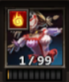

Íjász képességek
Az íjász a fő karakterem, de még ezzel sem használom az össze képességet, ezért csak azokat fogom bemutatni, amiket minden nap használok.

Volley: Három nyilat lő ki gyorsan egymás után. Empowered Rapid Fire rúnával kiegészítve tűz sebzést is okoz. Tökéletes mind Pvp, mind PvE-ben.

Spread Shot: Több nyilat lő ki egyszerre, alacsony újratöltési idővel rendelkezik, ezért PvE-ben elengedhetetlen képesség. PvP-ben nem hasznos, mert elég kevés sebzést okoz Spreading Darkness rúnával kiegészítve árnyék sebzést és kábítást okoz, emellett a földre viszi egy bizonyos másodpercig az ellenséget. Viszont van egy nagy hibája, hogy néha nem okoz semmilyen sebzést, nem találja el az ellenfelet.
Arcane Arrow: Ez a képesség valamennyi másodpercig egy bizonyos százalékkal csökkenti az ellenfél mozgási sebességét. Empowered Shadow Arcane Arrow rúnával kiegészítve növeli az árnyéksebzés nagyságát
Decoy: Egy madárijesztőt idéz meg a pályára, megvédi a jétkost, mert az ellenség amíg ez közelebb van hozzájuk, mint a karaktered addig ezt ütik. Tehát a leggyakrabban a sebzés eltérítésére használják, viszont a közelében lévő játékosokat megsebzi. Empowered Fire Trap rúna segítségével miután a madárijesztő meghal, akkor felrobban és megégeti a közeli ellenfeleket.
Shrapnel Arrow: Tűz sebzést okoz az eltalált ellenfélnek és a körülötte lévőknek is. Stone Arrow rúnával felszerelve további sebzést okoz, hasznos képesség a farmolás számára
Rain of Arrows: A nyilak úgy hullanak le az ellenségre mint az eső, az ellefél félelmében elszalad pár másodpercig és egy bizonyos százalékban meg is sebzi őket. Rain of Light rúnával a sebzés átváltozik fénykárosodásra. PvP és PvE számára is hasznos, mert pár másodpercig megbényítja az ellenfelet.
Pierce: Az egyik legjobb képesség PvE tekintetében. Az alap támadások egy bizonyos százalékú eséllyel áthatolnak az ellenségen, lehetővé teszi, hogy egy sorban több ellenfelet is eltaláljon. Illetve képes egy bizonyos százalékú életerő ellopására is. Granite Spike rúnával minden ötödik alapsebzéskor megbénítja ez ellenséget
Sniper: A támadások nagyobb károkat okoznak, azon a távolságon alapulva, amelyet a nyíl a következő egy bizonyos másodpercig repült.